Containers & Docker: Deep Internals and Comprehensive Practical Guide
This document is a complete, publication-quality guide to containers and Docker, covering everything from the Linux kernel primitives that make containers possible to daily command-line workflows for building, shipping, and running containerized applications. By the end, you will understand how containers actually work at the OS level (namespaces, cgroups, union filesystems), why Docker’s architecture is layered the way it is, and how to use Docker confidently in development and production. The target audience is developers and engineers who want both deep conceptual understanding and hands-on fluency. Prior Linux CLI experience is assumed; prior container experience is not.
Table of Contents
- Why This Matters
- Mental Models
- Part A: How Containers Work Under the Hood
- 1. The Three Pillars: Namespaces, Cgroups, Union Filesystem
- 2. The OCI Standard
- 3. Container Runtimes: containerd, runc, crun
- 4. Union Filesystem Layers and Copy-on-Write
- 5. Docker Architecture: dockerd, containerd, runc
- 6. Image Registries
- 7. Container Networking Deep Dive
- 8. Storage: Volumes vs Bind Mounts vs tmpfs
- Part B: Docker Practical — Step by Step
- Part C: Best Practices
- Common Pitfalls & Misconceptions
- Summary & Key Takeaways
- Quick Reference Cheat Sheet
- DSA Connections
- Further Reading
Why This Matters
Containers are the standard unit of deployment for modern software. Every major cloud provider, every CI/CD pipeline, every Kubernetes cluster, and most production systems you will encounter professionally rely on containerized workloads. Understanding containers is not optional for a working engineer in 2025 — it is foundational infrastructure literacy.
But there is a deeper reason to learn containers well: they are an elegant application of operating system primitives. Containers do not require a hypervisor, a special kernel, or magic. They are built from three Linux kernel features that have existed for over a decade — namespaces, cgroups, and union filesystems. When you understand these primitives, containers stop being a black box and become a transparent, debuggable, and predictable tool.
Docker specifically matters because it defined the developer experience for containers. Even though Kubernetes has moved to containerd as its default runtime, Docker’s CLI, Dockerfile format, image format, and Compose tooling remain the primary interface most developers use to build and test containers locally. The Docker image format is the OCI image format. The Docker registry protocol is the OCI distribution spec. Learning Docker is learning the lingua franca of container tooling.
This document is the most hands-on in the Kubernetes learning series. Every command is copy-paste-ready. Every concept is grounded in a concrete example. By the end, you will be able to build, ship, debug, and optimize containerized applications with confidence.
Mental Models
Before diving into internals, internalize these four mental models. They are the conceptual scaffolding that everything else hangs on.
Mental Model 1: A Container Is “A Process Wearing a Disguise”
A container is not a virtual machine. It is a regular Linux process (or group of processes) that has been given a carefully constructed illusion of isolation. Through namespaces, the process thinks it has its own filesystem, its own network stack, its own process tree, its own hostname. Through cgroups, the process is limited in how much CPU, memory, and I/O it can consume. Through a union filesystem, the process sees a complete root filesystem that was assembled from stacked, read-only image layers.
But under the hood, the host kernel is still running everything. There is one kernel, one scheduler, one set of physical resources. The container process shows up in the host’s process table (with a different PID than it sees internally). The container’s network traffic flows through the host’s network stack. The “disguise” is thorough but not impenetrable — and understanding this is key to debugging and securing containers.
Mental Model 2: OverlayFS as “Transparent Sheets on an Overhead Projector”
Imagine an old-fashioned overhead projector with a stack of transparent sheets. The bottom sheet is a base operating system (e.g., Alpine Linux). The next sheet adds a web server (nginx). The next sheet adds your application config files. When you look at the projected image, you see a single, unified picture — but each layer is a separate, reusable sheet.
This is exactly how OverlayFS works. Each image layer is a read-only directory of filesystem changes. They stack on top of each other, and the union filesystem presents them as one coherent filesystem tree. When a running container needs to modify a file, it uses copy-on-write: the file is copied up to a thin, writable layer on top, and the modification happens there. The original layers remain untouched.
Mental Model 3: Docker Image Layers as “Git Commits for Filesystems”
Every instruction in a Dockerfile (every RUN, COPY, ADD) creates a new layer — a diff of filesystem changes. Just like a git commit stores the delta from the previous state, each image layer stores only the files that changed. Layers are identified by their SHA-256 content hash, making them content-addressable and deduplicated. If two images share the same base layer, that layer is stored only once on disk and pulled only once from a registry.
When you docker build, Docker checks if it already has a cached layer for each instruction. If the instruction and its inputs haven’t changed, the cached layer is reused. This is why Dockerfile instruction ordering matters — put things that change rarely (installing OS packages) before things that change often (copying your source code).
Mental Model 4: Container Networking as “Virtual Ethernet Cables Connecting Virtual Switches”
When Docker creates a bridge network, it creates a virtual switch (a Linux bridge device) on the host. When a container joins that network, Docker creates a virtual ethernet cable (a veth pair) — one end inside the container’s network namespace, the other end plugged into the virtual switch. Containers on the same bridge can talk to each other through the switch. Traffic leaving the bridge to the outside world passes through the host’s iptables rules, which handle NAT (network address translation) for port mapping.
Think of it like a physical network rack: the bridge is a switch, each veth pair is an ethernet cable, and iptables is the firewall sitting at the edge.
Part A: How Containers Work Under the Hood
1. The Three Pillars: Namespaces, Cgroups, Union Filesystem
A container is the combination of three independent Linux kernel features. Each solves a different aspect of isolation:
| Pillar | What It Isolates | Kernel Feature |
|---|---|---|
| Namespaces | What a process can see | clone() / unshare() syscalls |
| Cgroups | What a process can use | /sys/fs/cgroup pseudo-filesystem |
| Union FS | What a process sees as its root filesystem | OverlayFS / overlay2 driver |
Namespaces
Namespaces are a Linux kernel feature that partitions kernel resources so that one set of processes sees one set of resources, and another set of processes sees a different set. Linux supports eight namespace types:
| Namespace | Flag | What It Isolates |
|---|---|---|
| PID | CLONE_NEWPID | Process IDs — the container sees PID 1 as its init process |
| NET | CLONE_NEWNET | Network interfaces, routing tables, iptables rules, ports |
| MNT | CLONE_NEWNS | Mount points — the container sees its own filesystem tree |
| UTS | CLONE_NEWUTS | Hostname and domain name |
| IPC | CLONE_NEWIPC | Inter-process communication (shared memory, semaphores) |
| USER | CLONE_NEWUSER | User and group IDs — root inside container maps to non-root outside |
| Cgroup | CLONE_NEWCGROUP | Cgroup root directory visibility |
| Time | CLONE_NEWTIME | System clock offsets (Linux 5.6+) |
When you run docker run, Docker (via runc) calls clone() with a combination of these flags to create a new process in its own set of namespaces. The process thinks it is PID 1, thinks it has its own network stack, thinks it has its own hostname. But from the host’s perspective, it is just another process.
You can inspect a container’s namespaces from the host:
# Find the container's PID on the host
docker inspect --format '{{.State.Pid}}' my-container
# Output: 12345
# List its namespaces
ls -la /proc/12345/ns/
# Output:
# lrwxrwxrwx 1 root root 0 ... cgroup -> cgroup:[4026532567]
# lrwxrwxrwx 1 root root 0 ... ipc -> ipc:[4026532565]
# lrwxrwxrwx 1 root root 0 ... mnt -> mnt:[4026532563]
# lrwxrwxrwx 1 root root 0 ... net -> net:[4026532568]
# lrwxrwxrwx 1 root root 0 ... pid -> pid:[4026532566]
# lrwxrwxrwx 1 root root 0 ... user -> user:[4026531837]
# lrwxrwxrwx 1 root root 0 ... uts -> uts:[4026532564]Each namespace is identified by an inode number. Processes sharing the same inode for a given namespace type are in the same namespace.
Cgroups (Control Groups)
Cgroups (short for control groups) limit, account for, and isolate the resource usage of a collection of processes. While namespaces control visibility, cgroups control resource consumption.
Key cgroup controllers (subsystems):
| Controller | What It Limits |
|---|---|
cpu | CPU time shares and quotas |
cpuset | Which CPU cores and memory nodes a process can use |
memory | Memory usage (RAM + swap), with OOM killer integration |
blkio / io | Block device I/O bandwidth and IOPS |
pids | Maximum number of processes (prevents fork bombs) |
devices | Access to device files (/dev/*) |
Modern Linux uses cgroups v2 (unified hierarchy), where all controllers are managed under a single tree at /sys/fs/cgroup. Docker sets up a cgroup for each container:
# Inspect a container's cgroup limits
cat /sys/fs/cgroup/system.slice/docker-<container-id>.scope/memory.max
# Output: 536870912 (512 MB limit)
cat /sys/fs/cgroup/system.slice/docker-<container-id>.scope/cpu.max
# Output: 100000 100000 (1 CPU core — 100ms quota per 100ms period)When a container exceeds its memory limit, the kernel’s OOM (Out of Memory) killer terminates the process — this is why you sometimes see containers exit with code 137 (128 + signal 9, SIGKILL).
Union Filesystem
The union filesystem (typically OverlayFS via Docker’s overlay2 storage driver) merges multiple directory trees into a single unified view. This is what gives each container a complete-looking root filesystem without duplicating all the data from the base image.
We cover this in depth in Section 4.
2. The OCI Standard
The Open Container Initiative (OCI) defines two critical specifications that decouple container tooling from any single vendor:
OCI Image Specification — Defines the format of a container image: a manifest (JSON metadata describing the layers), a config (JSON with runtime settings like environment variables, entrypoint, working directory), and a set of layer tarballs. Any tool that produces OCI-compliant images can be consumed by any OCI-compliant runtime. Docker images, Podman images, and Buildah images all conform to this spec.
OCI Runtime Specification — Defines how to run a container given an unpacked filesystem bundle and a config.json. The config specifies namespaces, cgroups, mounts, and the process to execute. runc is the reference implementation of this spec. When you run docker run, the chain of events eventually reaches an OCI runtime that reads this spec and calls the appropriate kernel syscalls.
OCI Distribution Specification — Defines the HTTP API for pushing and pulling images from registries. This is the protocol spoken by Docker Hub, Amazon ECR, Google GCR, GitHub GHCR, and every other container registry.
The OCI standards mean you are never locked into Docker. You can build images with buildah, run them with podman or crun, and push them to any compliant registry. The image format is the universal interchange.
3. Container Runtimes: containerd, runc, crun
The container runtime landscape has a clear layered structure:
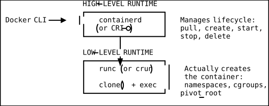
runc — The reference OCI runtime, written in Go. It takes an OCI bundle (a root filesystem directory plus a config.json) and creates a container by calling clone() with the appropriate namespace flags, setting up cgroups, pivoting the root filesystem, and executing the specified process. runc does one thing and does it well: it creates a single container and exits.
crun — An alternative OCI runtime written in C. It is significantly faster and uses less memory than runc because it avoids Go’s runtime overhead. Functionally equivalent to runc for most use cases.
containerd — A high-level runtime (also called a container manager) that sits above runc. It manages the full container lifecycle: pulling images from registries, unpacking them into OCI bundles, calling runc to create containers, managing snapshots (filesystem layers), handling container logs, and providing a gRPC API. Kubernetes uses containerd directly (via the CRI plugin) without needing Docker at all.
CRI-O — An alternative to containerd that is purpose-built for Kubernetes. It implements the Kubernetes Container Runtime Interface (CRI) and is lighter weight than containerd because it doesn’t support non-Kubernetes use cases.
4. Union Filesystem Layers and Copy-on-Write
This is one of the most elegant pieces of container technology, and understanding it deeply will help you write better Dockerfiles, debug layer-related issues, and optimize image sizes.
How OverlayFS Works
OverlayFS merges two directory trees — called the lowerdir (read-only) and the upperdir (read-write) — into a single merged view. There is also a workdir used internally by the kernel for atomic operations.
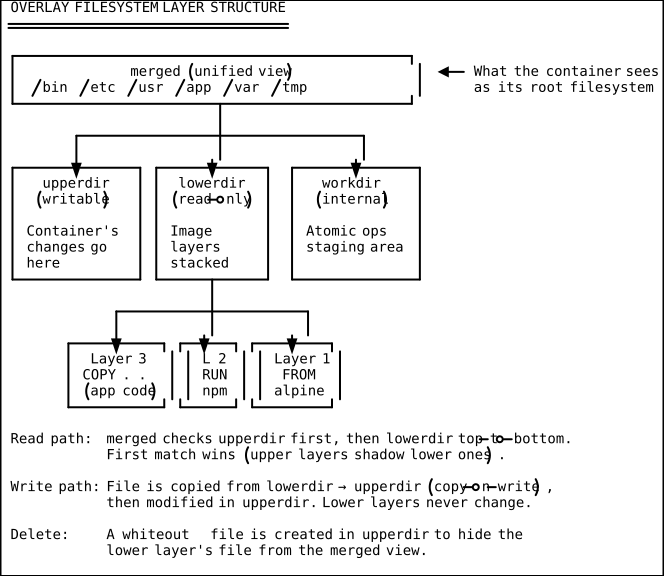
Copy-on-Write in Detail
When a container process reads a file, OverlayFS checks the upperdir first. If the file is there, it serves it. If not, it looks through the lowerdir layers top-to-bottom and serves the first match.
When a container process writes to a file that exists only in a lower layer:
- The entire file is copied up to the upperdir (this is the “copy-on-write” operation).
- The modification is applied to the copy in the upperdir.
- Subsequent reads see the upperdir version (it shadows the lower version).
- The lower layer’s file remains untouched.
This has practical implications:
- First write to a large file is expensive because the entire file must be copied up, even if you only change one byte.
- Deleting a file from a lower layer does not free space in the image. OverlayFS creates a whiteout file (a special character device file) in the upperdir to mask the lower file, but the lower layer still contains it.
Viewing Image Layers
Every Docker image is a stack of layers. You can inspect them:
# Show the layer history of an image
docker image history nginx:alpine
# Output:
# IMAGE CREATED CREATED BY SIZE
# a8758716bb6a 2 weeks ago CMD ["nginx" "-g" "daemon off;"] 0B
# <missing> 2 weeks ago STOPSIGNAL SIGQUIT 0B
# <missing> 2 weeks ago EXPOSE map[80/tcp:{}] 0B
# <missing> 2 weeks ago ENTRYPOINT ["/docker-entrypoint.sh"] 0B
# <missing> 2 weeks ago COPY file:xxx in /docker-entrypoint.d 4.62kB
# <missing> 2 weeks ago COPY file:xxx in /docker-entrypoint.d 3.02kB
# <missing> 2 weeks ago COPY file:xxx in /docker-entrypoint.d 1.04kB
# <missing> 2 weeks ago COPY file:xxx in / 1.2kB
# <missing> 2 weeks ago RUN /bin/sh -c set -x && addgroup ... 26.4MB
# <missing> 2 weeks ago ENV DYNPKG_RELEASE=1 0B
# <missing> 3 weeks ago /bin/sh -c #(nop) CMD ["/bin/sh"] 0B
# <missing> 3 weeks ago /bin/sh -c #(nop) ADD file:xxx in / 7.8MBEach line represents a layer. Lines with 0B size are metadata-only changes (no filesystem diff). The bottom layer (ADD file:... in /) is the Alpine base image (~7.8 MB). The RUN layer that installs nginx adds ~26.4 MB.
5. Docker Architecture: dockerd, containerd, runc
Docker’s architecture is a layered stack of components, each with a well-defined responsibility:
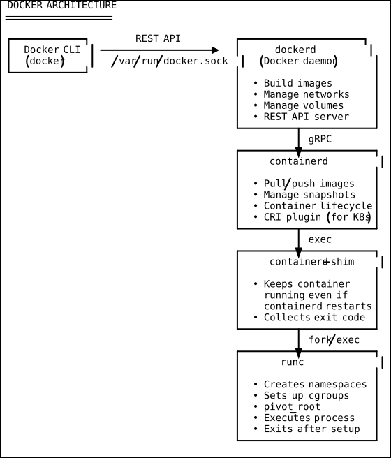
Step-by-step: what happens when you run docker run nginx:
- The Docker CLI (
docker) sends a REST API request todockerdover the Unix socket/var/run/docker.sock. dockerd(the Docker daemon) validates the request, resolves the image reference, and delegates tocontainerdvia gRPC.containerdpulls the image (if not cached), unpacks it into an OCI bundle using the snapshotter (overlay2), and creates a task.containerdstarts acontainerd-shimprocess for the new container. The shim exists so thatcontainerdcan be restarted without killing running containers.- The shim calls
runcto create the container.runcsets up namespaces, cgroups, mounts, and callspivot_rootto change the container’s root filesystem. runcexecs the container’s entrypoint process and then exits — it is not a long-running daemon.- The container process is now running, parented to the
containerd-shim. The shim forwards stdio, collects the exit code, and reports it back tocontainerd.
This layered design means you can upgrade Docker (dockerd) without restarting your containers, and Kubernetes can use containerd directly without needing dockerd at all.
6. Image Registries
An image registry is an HTTP service that stores and distributes container images. It implements the OCI Distribution Specification (originally the Docker Registry HTTP API v2).
Key registries:
| Registry | URL | Notes |
|---|---|---|
| Docker Hub | hub.docker.com | Default public registry; 100 pulls/6h (anonymous) |
| Amazon ECR | <acct>.dkr.ecr.<region>.amazonaws.com | AWS-native; IAM auth; per-region |
| Google GCR / Artifact Registry | gcr.io / <region>-docker.pkg.dev | GCP-native; Artifact Registry is the successor to GCR |
| GitHub GHCR | ghcr.io | Free for public images; PAT or GITHUB_TOKEN auth |
| Self-hosted | Any URL | Harbor, GitLab Registry, Zot, Distribution |
An image reference follows this pattern: [registry/][namespace/]repository[:tag|@digest]
nginx→ shorthand fordocker.io/library/nginx:latestghcr.io/myorg/myapp:v2.1.0→ GHCR, org namespace, specific tagnginx@sha256:abcdef...→ pinned to an exact digest (immutable, recommended for production)
Key insight: Tags are mutable pointers.
nginx:latestcan point to a different image tomorrow. For reproducible builds and deployments, always pin images by digest or use specific version tags (nginx:1.27.0-alpine), never:latest.
7. Container Networking Deep Dive
Docker supports multiple network drivers, each implementing a different networking model. Understanding these requires knowing a few Linux networking primitives:
- veth pair — A virtual ethernet cable. Created as a pair of interfaces; packets sent into one end come out the other. One end goes inside the container’s network namespace, the other stays on the host.
- Linux bridge — A virtual Layer 2 switch. Multiple veth endpoints can be plugged into it; it forwards frames between them.
- iptables — The Linux kernel’s packet filtering and NAT framework. Docker uses it for port mapping (DNAT) and masquerading (SNAT for outbound traffic).
Bridge Network (Default)
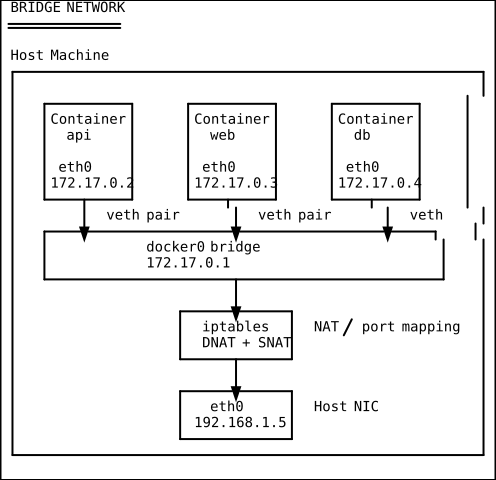
The bridge driver is the default. Docker creates a Linux bridge (docker0 for the default network, or a custom-named bridge for user-defined networks). Each container gets a veth pair: one end becomes eth0 inside the container, the other is plugged into the bridge.
Containers on the same bridge can communicate via their IP addresses. On user-defined bridges (created with docker network create), Docker also provides DNS-based service discovery — containers can reach each other by name (http://api:3000). The default docker0 bridge does not provide DNS resolution.
Port mapping (-p 8080:80) works via iptables DNAT rules: packets arriving at the host on port 8080 are rewritten to destination 172.17.0.x:80 and forwarded to the container.
Host Network
docker run --network host nginxThe container shares the host’s network namespace entirely. No network isolation, no veth pairs, no bridge. The container’s processes bind directly to the host’s ports. This gives the best network performance (no NAT overhead) but sacrifices isolation. Useful for network-intensive workloads or when you need to access host network services.
None Network
docker run --network none alpineThe container gets only a loopback interface (lo). No external connectivity at all. Useful for batch processing jobs that don’t need network access, or for security-sensitive workloads.
Overlay Network
Used in Docker Swarm and multi-host scenarios. Creates a virtual network that spans multiple Docker hosts using VXLAN encapsulation. Each packet is wrapped in a UDP envelope with a VXLAN header, allowing containers on different physical machines to communicate as if they were on the same L2 network. Kubernetes uses a similar concept via CNI plugins (Flannel, Calico, Cilium).
Macvlan Network
Assigns a real MAC address to each container, making it appear as a physical device on the network. The container gets an IP on the physical network’s subnet. Useful for legacy applications that expect to be directly on the LAN, or when you need containers to be reachable without port mapping.
8. Storage: Volumes vs Bind Mounts vs tmpfs
Containers have an ephemeral writable layer — when the container is removed, the data is gone. For persistent data, Docker provides three storage mechanisms:
| Type | Managed By | Location on Host | Use Case |
|---|---|---|---|
| Volume | Docker | /var/lib/docker/volumes/<name>/_data | Databases, persistent app state |
| Bind mount | You | Any path on host filesystem | Sharing source code during development |
| tmpfs | Kernel | RAM only (never written to disk) | Secrets, temporary scratch data |
Volumes are the recommended mechanism for production data. Docker manages the lifecycle — they survive container removal, can be shared between containers, and can use volume drivers for remote storage (NFS, cloud block storage).
Bind mounts map an arbitrary host path into the container. They are the workhorse of local development — mount your source code into the container and get hot-reload. But they create a tight coupling to the host filesystem layout and can expose sensitive host files if misconfigured.
tmpfs mounts exist only in memory. They are never written to the container’s writable layer or to the host filesystem. Perfect for sensitive data that should never persist to disk (tokens, temporary encryption keys).
Part B: Docker Practical — Step by Step
1. Installation
# Download and run Docker's official install script.
# This works on Ubuntu, Debian, Fedora, CentOS, and most Linux distros.
# It adds Docker's apt/yum repo and installs docker-ce, containerd, and the CLI.
curl -fsSL https://get.docker.com | sh
# Add your user to the 'docker' group so you can run docker without sudo.
# You must log out and back in (or run 'newgrp docker') for this to take effect.
sudo usermod -aG docker $USER
# Verify the installation — check that the daemon is running and the CLI can connect.
docker version # shows Client and Server version info
docker info # shows storage driver, runtime, and system detailsSecurity note: Adding a user to the
dockergroup effectively grants them root access to the host, because Docker containers can mount any host path. In production, consider rootless Docker or Podman instead.
2. Working with Images
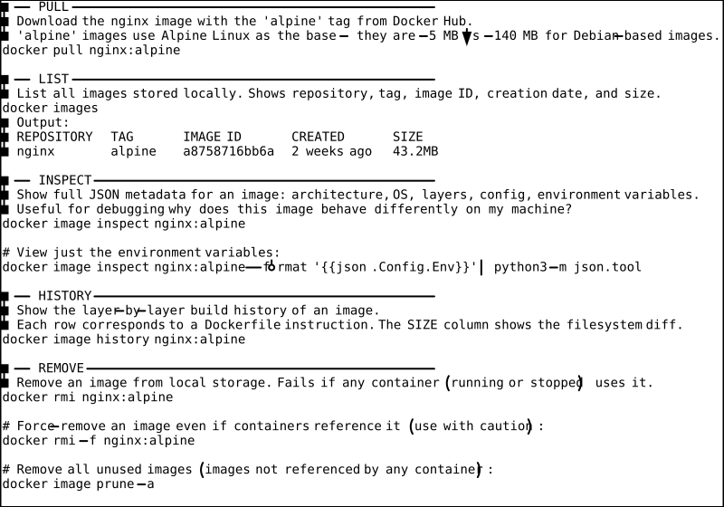
3. Running and Managing Containers
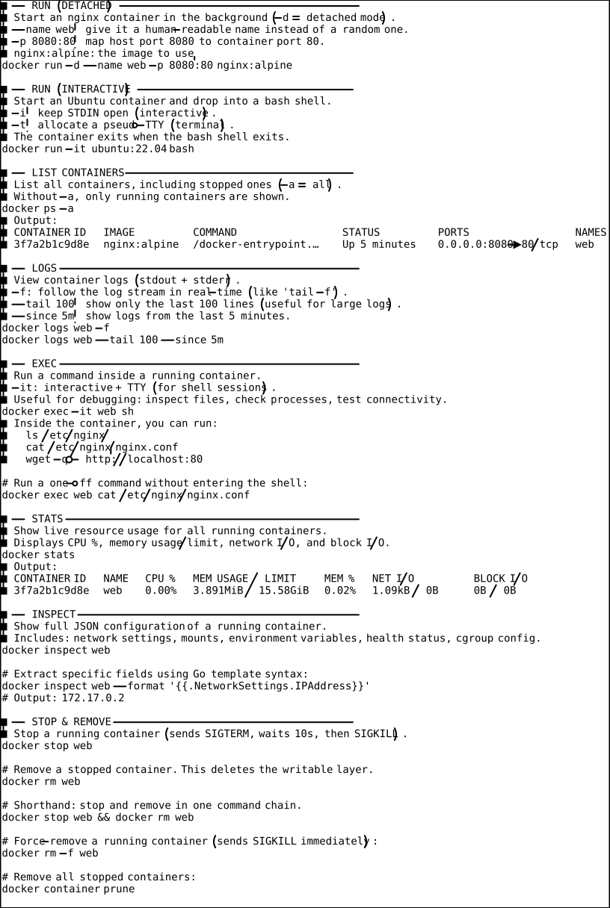
4. Writing Dockerfiles
A Dockerfile is a text file containing instructions for building a Docker image. Each instruction creates a new layer in the image.
Dockerfile Instruction Reference
| Instruction | Purpose |
|---|---|
FROM | Set the base image. Every Dockerfile starts with this. |
WORKDIR | Set the working directory for subsequent instructions. Creates it if it doesn’t exist. |
COPY | Copy files from the build context into the image. |
ADD | Like COPY but also supports URLs and auto-extracts archives. Prefer COPY for clarity. |
RUN | Execute a command in a new layer. Used for installing packages, compiling code, etc. |
ENV | Set environment variables (persisted in the image). |
ARG | Define build-time variables (not persisted in the image). |
EXPOSE | Document which port the container listens on. Does not actually publish the port. |
USER | Set the user for subsequent instructions and the container’s runtime process. |
ENTRYPOINT | Set the main executable. Use exec form: ["executable", "arg1"]. |
CMD | Set default arguments to ENTRYPOINT, or the default command if no ENTRYPOINT. |
HEALTHCHECK | Define a command to check if the container is healthy. |
Multi-Stage Build Example (Node.js App)
Multi-stage builds use multiple FROM instructions in a single Dockerfile. Each FROM starts a new build stage. You can copy artifacts from one stage to another, leaving behind build tools and intermediate files. This is the primary technique for creating small, production-ready images.
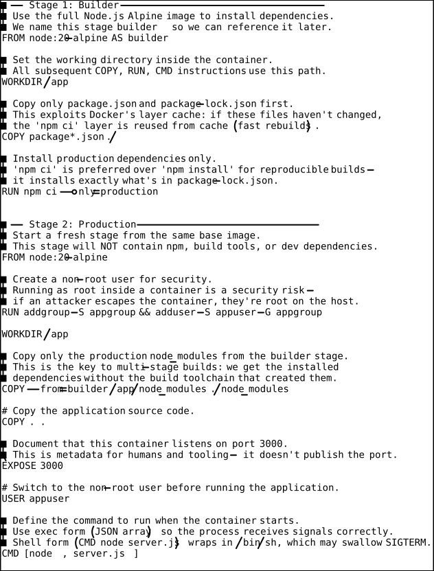
Building Images
# Build an image from the Dockerfile in the current directory.
# -t myapp:1.0: tag the image as "myapp" with version "1.0".
# The '.' at the end is the build context — the directory whose files are available to COPY.
docker build -t myapp:1.0 .
# Build with no cache — forces all layers to rebuild.
# Useful when a RUN command fetches external resources that may have changed.
# --platform linux/amd64: explicitly build for x86_64 (important on ARM Macs for deployment to x86 servers).
docker build --no-cache --platform linux/amd64 -t myapp:1.0 .
# Build with build arguments (for ARG instructions):
docker build --build-arg NODE_ENV=production -t myapp:1.0 .
# Show the build output even when using BuildKit (default in Docker 23+):
docker build --progress=plain -t myapp:1.0 .The .dockerignore File
Just like .gitignore, a .dockerignore file excludes files from the build context. This speeds up builds and prevents sensitive files from ending up in the image.
# .dockerignore
node_modules # Don't send the host's node_modules to the build context
.git # Git history is not needed in the image
.env # NEVER include secret files in images
*.md # Documentation not needed at runtime
Dockerfile # The Dockerfile itself isn't needed inside the image
.dockerignore # This file isn't needed either
dist # Build artifacts (if rebuilding inside the container)
coverage # Test coverage reports
.nyc_output # NYC test output
5. Working with Volumes
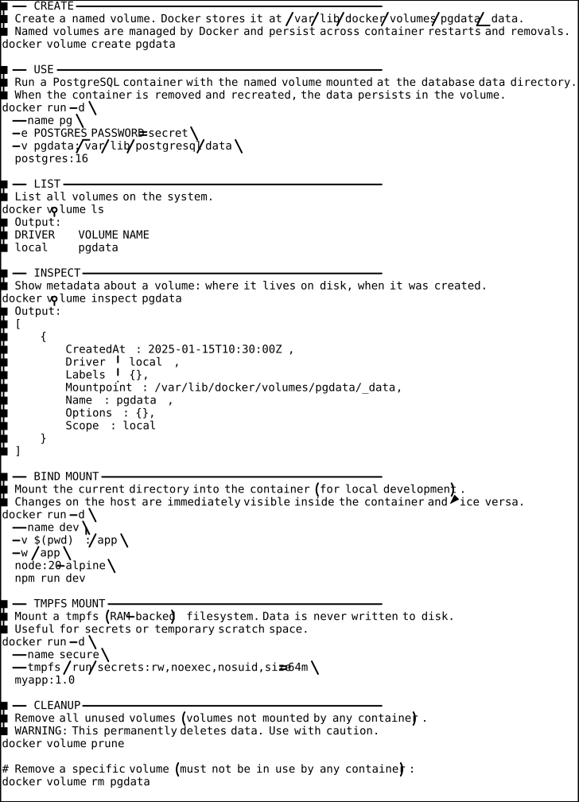
6. Docker Networking in Practice
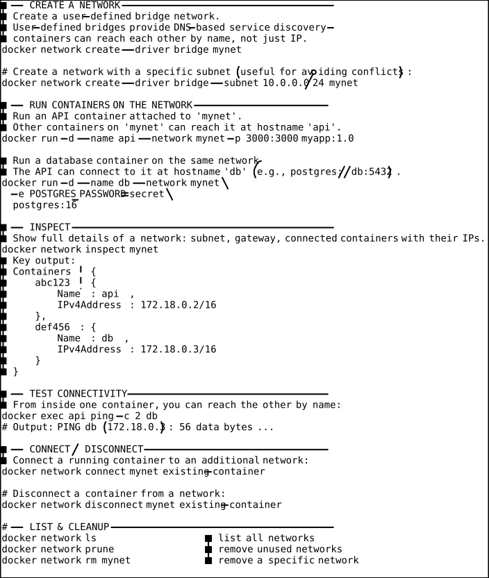
7. Docker Compose
Docker Compose is a tool for defining and running multi-container applications with a single YAML file. Instead of remembering long docker run commands, you declare your entire stack in docker-compose.yml (or compose.yml) and manage it with docker compose commands.
Full docker-compose.yml Example
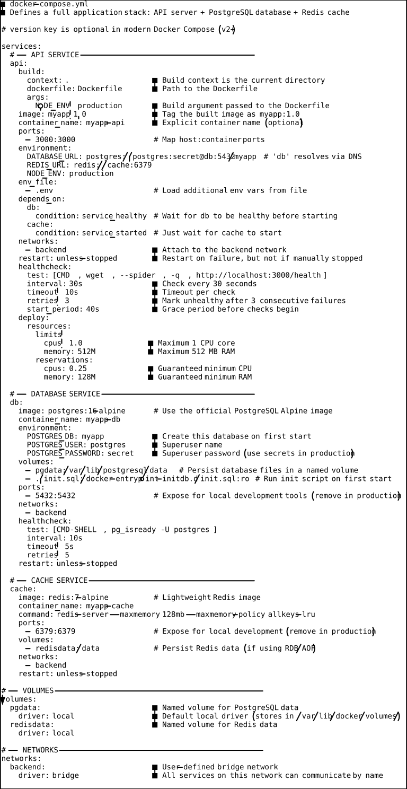
Docker Compose Commands
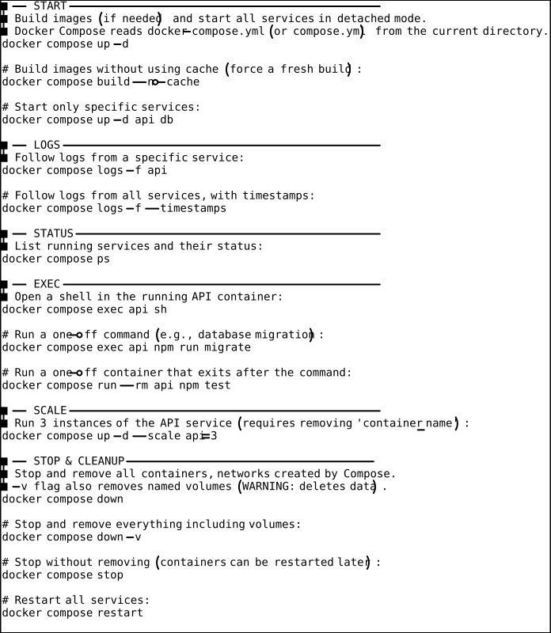
8. Working with Registries
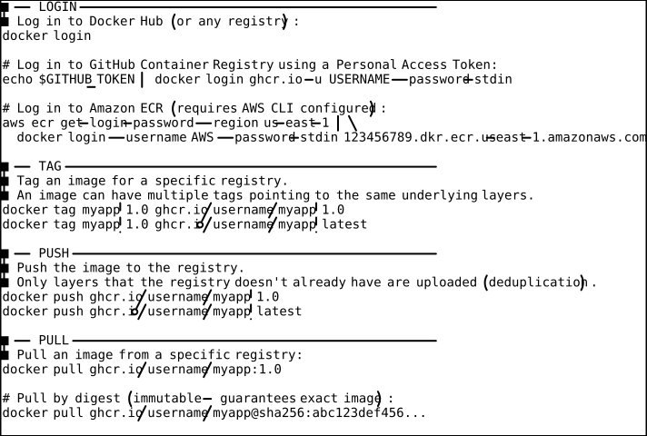
9. Debugging Containers
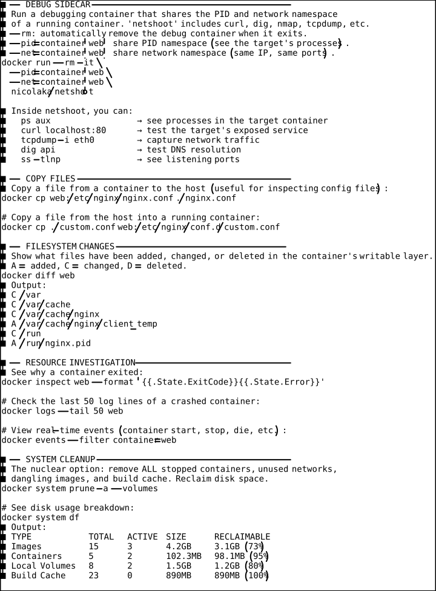
Part C: Best Practices
1. Image Size Optimization
Smaller images pull faster, start faster, use less storage, and have a smaller attack surface. Here are the key techniques:
Use Alpine-based images. Alpine Linux is ~5 MB compared to ~140 MB for Debian/Ubuntu. Most official images offer Alpine variants: node:20-alpine, python:3.12-alpine, nginx:alpine.
# Bad: ~950 MB final image
FROM node:20
COPY . .
RUN npm install
# Good: ~150 MB final image
FROM node:20-alpine
COPY . .
RUN npm ci --only=productionUse multi-stage builds (demonstrated in Section B.4). Build your application in one stage, then copy only the runtime artifacts into a minimal final stage. The build tools, compilers, and intermediate files are left behind.
Combine RUN commands. Each RUN instruction creates a new layer. If you install packages and then clean up temp files in separate RUN instructions, the temp files exist in an earlier layer and still contribute to image size.
# Bad: temp files persist in the first layer (layer = 200 MB)
RUN apt-get update && apt-get install -y build-essential
RUN make && make install
RUN apt-get purge -y build-essential && rm -rf /var/lib/apt/lists/*
# Good: everything in one layer, cleanup happens before the layer is committed (layer = 50 MB)
RUN apt-get update \
&& apt-get install -y --no-install-recommends build-essential \
&& make && make install \
&& apt-get purge -y build-essential \
&& apt-get autoremove -y \
&& rm -rf /var/lib/apt/lists/*Use .dockerignore. Exclude node_modules, .git, dist, *.md, .env, and other files that are not needed at runtime. A large build context slows down every build.
Order Dockerfile instructions by change frequency. Put things that change rarely (base image, system packages) at the top, and things that change often (application source code) at the bottom. This maximizes layer cache hits.
2. Security
Run as a non-root user. By default, containers run as root. If an attacker exploits a vulnerability in your application, they are root inside the container — and with certain misconfigurations, root on the host.
# Create a non-root user and switch to it
RUN addgroup -S appgroup && adduser -S appuser -G appgroup
USER appuserUse read-only filesystem. If your application doesn’t need to write to the filesystem, run the container with a read-only root filesystem. This prevents attackers from writing malicious files.
docker run --read-only --tmpfs /tmp --tmpfs /run myapp:1.0Never put secrets in image layers. Everything in a Dockerfile is baked into the image and can be extracted by anyone who pulls it. Never COPY .env or RUN echo $PASSWORD > /config. Use runtime environment variables, Docker secrets, or a secrets manager.
# WRONG: secret is baked into a layer forever
COPY .env /app/.env
# RIGHT: pass secrets at runtime
# docker run -e API_KEY=$API_KEY myapp:1.0Scan images for vulnerabilities. Use docker scout (built-in), Trivy, or Snyk to scan images for known CVEs before deploying.
docker scout cves myapp:1.0 # built-in vulnerability scannerPin image versions. Never use :latest in production Dockerfiles. Pin to a specific version and digest.
# Bad: latest can change at any time
FROM node:latest
# Better: specific version
FROM node:20.11.0-alpine
# Best: pinned by digest (immutable)
FROM node:20.11.0-alpine@sha256:abc123...3. Health Checks
A HEALTHCHECK instruction tells Docker how to test whether your container is still working correctly. Without a health check, Docker only knows whether the main process is running — it doesn’t know if your app is actually responsive.
# Check that the HTTP endpoint responds with a 200 status code.
HEALTHCHECK --interval=30s --timeout=10s --start-period=40s --retries=3 \
CMD wget --spider -q http://localhost:3000/health || exit 1| Parameter | Meaning |
|---|---|
--interval | Time between checks (default 30s) |
--timeout | Maximum time a single check can take (default 30s) |
--start-period | Grace period after container start — failures don’t count (default 0s) |
--retries | Number of consecutive failures before marking unhealthy (default 3) |
When a container is unhealthy, Docker Compose’s depends_on with condition: service_healthy won’t start dependent services, and orchestrators like Kubernetes (via liveness probes, which are the K8s equivalent) will restart the container.
# Check health status of a running container:
docker inspect web --format '{{.State.Health.Status}}'
# Output: healthy4. Resource Limits
Without resource limits, a single misbehaving container can consume all of the host’s CPU and memory, starving other containers. Always set limits in production.
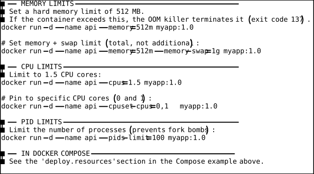
Common Pitfalls & Misconceptions
Pitfall 1: “Containers Are Lightweight VMs”
This is the most widespread misconception. Containers are not virtual machines. They do not have their own kernel. They do not emulate hardware. They are processes with kernel-enforced resource and visibility boundaries. This distinction matters for security (containers share the host kernel, so kernel exploits affect all containers), for performance (no virtualization overhead, but also no hardware-level isolation), and for debugging (container processes are visible from the host).
Pitfall 2: “My Image Is Small, So My Container Uses Little Disk Space”
A container’s writable layer grows every time the container process writes a file. A 50 MB image can accumulate gigabytes of data in the writable layer (log files, temp files, caches). This is why volumes exist — they decouple persistent data from the container lifecycle. Always use volumes for data that grows over time.
Pitfall 3: “COPY . . Is Fine — I’ll Clean Up Later”
Once data enters an image layer, it is there forever — even if a subsequent RUN rm deletes it. The layer containing the data still exists in the image’s layer stack. This is why people accidentally ship images containing secret keys, .git directories (with full history), or node_modules. Use .dockerignore aggressively and review docker image history before pushing.
Pitfall 4: “I Don’t Need Health Checks — Docker Will Restart My Container”
Docker (and Docker Compose with restart: always) only restarts containers whose main process exits. If your process is alive but deadlocked, stuck in an infinite loop, or returning 500 errors, Docker has no way to know without a health check. Without health checks, you get a “running but broken” container that looks fine to the orchestrator.
Pitfall 5: “docker exec in Production Is Fine”
Using docker exec to modify a running production container (editing config files, installing packages) creates configuration drift — the container’s actual state diverges from what the Dockerfile describes. When the container is recreated (after a crash, a redeploy, or scaling), those changes are lost. Treat containers as immutable. If you need to change something, build a new image and redeploy.
Pitfall 6: “Running as Root Inside the Container Is Safe Because It’s Isolated”
Container isolation is not absolute. If a kernel vulnerability allows container escape, an attacker who is root inside the container is root on the host. Running as a non-root user inside the container is a defense-in-depth measure that reduces the blast radius of a compromise. Always use USER in your Dockerfile.
Pitfall 7: “I Can Just Use localhost to Connect Between Containers”
Each container has its own network namespace. localhost inside a container refers to that container’s own loopback interface, not the host or other containers. Use container names as hostnames on a user-defined bridge network (e.g., http://api:3000), or use the host network mode if you genuinely need all containers to share the host’s network stack.
Pitfall 8: “Dangling Images and Volumes Clean Themselves Up”
They don’t. Every docker build that changes a layer creates a new image and leaves the old one dangling. Every docker compose down (without -v) leaves volumes behind. Over time, this accumulates to tens of gigabytes. Run docker system prune periodically, or set up a cron job.
Summary & Key Takeaways
How Containers Work:
- A container is a regular Linux process isolated by namespaces (what it can see), cgroups (what it can use), and a union filesystem (what it sees as its root).
- There is no container kernel — all containers share the host’s Linux kernel.
- The OCI specification defines portable, vendor-neutral standards for images and runtimes.
- Docker’s architecture is layered: CLI → dockerd → containerd → runc. Each layer can be replaced independently.
Docker Images:
- Images are stacks of read-only filesystem layers, identified by SHA-256 content hashes.
- Dockerfile instruction ordering matters for cache efficiency: put stable instructions first, frequently-changing instructions last.
- Multi-stage builds are the primary technique for creating small, production-ready images.
.dockerignoreis essential — it prevents secrets, build artifacts, and unnecessary files from entering the image.
Docker Networking:
- The default bridge network provides IP-based connectivity; user-defined bridges add DNS-based service discovery.
- Port mapping works via iptables DNAT rules.
- Containers use veth pairs to connect to Linux bridge devices.
Docker Storage:
- Use named volumes for persistent data (databases, uploads).
- Use bind mounts for local development (hot-reload source code).
- Use tmpfs for sensitive data that should never touch disk.
Best Practices:
- Run as non-root (
USERinstruction). - Set resource limits (
--memory,--cpus). - Add health checks (
HEALTHCHECKinstruction). - Pin image versions (never
:latestin production). - Scan images for vulnerabilities before deploying.
- Treat containers as immutable — never
docker execto fix production.
You should now be able to:
- Explain the three Linux kernel features that make containers possible
- Build optimized, multi-stage Docker images
- Run, debug, and manage containers with the Docker CLI
- Write a complete
docker-compose.ymlfor a multi-service application - Set up custom networks with DNS service discovery
- Use volumes for persistent storage
- Apply security best practices (non-root, read-only FS, no secrets in layers)
- Debug containers using
docker exec,docker logs,docker diff, and sidecar tools
Quick Reference Cheat Sheet
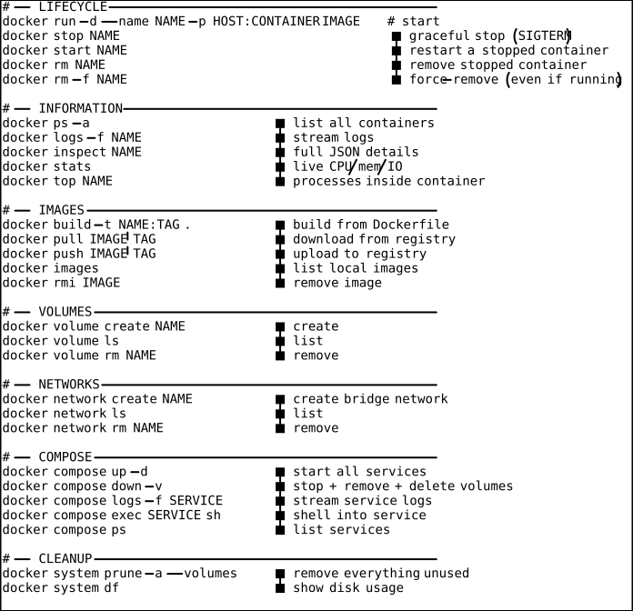
DSA Connections
Understanding containers becomes richer when you recognize the data structures and algorithms at work under the hood.
1. OverlayFS Layers — Linked List of Layer Diffs
Each image layer represents a diff (set of filesystem changes) from the previous layer. The layers form a singly linked list: each layer points to its parent. When the container reads a file, the runtime traverses the list from the top (most recent layer) downward until it finds the file — exactly like traversing a linked list searching for a value. Whiteout files act as “tombstone” markers, equivalent to a soft-delete node that short-circuits the search.
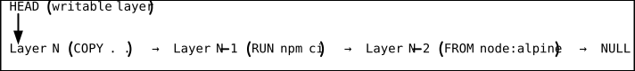
Time complexity for file lookup: O(L) where L is the number of layers (in practice, OverlayFS optimizes this with directory caches).
2. Image Layer Content-Addressing — SHA-256 Hash Map
Every image layer is identified by the SHA-256 hash of its content. The registry and local storage act as a hash map (dictionary) mapping digests to layer data: digest -> layer_tarball. This enables:
- Deduplication: If two images share a layer, it is stored once. The hash map lookup
O(1)confirms the layer already exists. - Integrity verification: After pulling a layer, the client hashes it and verifies the digest matches. Any corruption or tampering produces a different hash.
- Content-addressable storage (CAS): The same pattern used by Git for objects and by IPFS for blocks.
3. iptables DNAT Rules — Hash Table Lookup
When Docker maps a port (-p 8080:80), it inserts a DNAT (Destination NAT) rule into the host’s iptables nat table. The Linux kernel’s netfilter framework uses a hash table (conntrack table) to track and rewrite connections. When a packet arrives at host port 8080, the kernel performs an O(1) hash table lookup to find the DNAT rule and rewrites the destination to the container’s IP:port. Subsequent packets in the same connection use the conntrack entry for even faster processing.
4. Container Network Bridge — Graph (Nodes = Containers, Edges = Veth Pairs)
A Docker bridge network is a graph data structure. Each container is a node, each veth pair connecting a container to the bridge is an edge, and the bridge itself is a central node (forming a star topology). The bridge’s MAC address table is a hash map (MAC_address -> port) used to forward frames to the correct container.
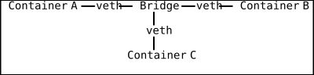
This is a star graph where the bridge is the hub. Adding or removing containers is O(1) — just create/destroy a veth pair and update the bridge’s forwarding table.
5. Docker Layer Cache — LRU Cache Pattern
Docker’s build cache follows the LRU (Least Recently Used) cache pattern. When building an image, Docker checks if a cached layer exists for each instruction. The cache key is the combination of the parent layer’s hash, the instruction text, and (for COPY/ADD) the hash of the source files.
Cache hits are O(1) lookups in a hash map. When disk space is limited, Docker’s builder prune evicts the least recently used cache entries first — classic LRU eviction. This is why ordering your Dockerfile instructions by change frequency is the equivalent of optimizing cache hit rates: put hot (frequently changing) entries at the bottom so cold (stable) entries above them remain cached.
Further Reading
-
“Docker Deep Dive” by Nigel Poulton — The most comprehensive Docker book. Covers internals, networking, security, and orchestration. Excellent for the reader who wants the full picture beyond this document.
-
“Container Security” by Liz Rice — Focused on the security implications of containers. Covers namespaces, capabilities, seccomp, AppArmor, and how to think about container threat models. Essential reading for anyone deploying containers in production.
-
The OCI Specifications (https://opencontainers.org/) — The actual specs for image format, runtime, and distribution. Read these when you need the authoritative reference rather than a tutorial.
-
Docker Official Documentation (https://docs.docker.com/) — The reference for all Docker CLI commands, Dockerfile instructions, Compose file syntax, and networking drivers. Well-maintained and searchable.
-
“What even is a container?” by Julia Evans (https://jvns.ca/blog/2016/10/10/what-even-is-a-container/) — A short, delightful blog post that explains containers from the Linux kernel perspective. Perfect for building intuition.
-
“Namespaces in operation” series on LWN.net (https://lwn.net/Articles/531114/) — A multi-part deep dive into every Linux namespace type, written by the kernel documentation maintainer. The definitive technical reference on namespaces.
-
Dockerfile best practices (https://docs.docker.com/build/building/best-practices/) — Docker’s official guide to writing efficient, secure Dockerfiles. Includes the layer caching strategies and multi-stage build patterns covered in this document.
-
“Containers from Scratch” talk by Liz Rice (YouTube) — A 35-minute live-coding talk where the speaker builds a container runtime from scratch in Go, calling
clone(),pivot_root, andcgroupAPIs directly. The best way to see how containers really work. -
Docker Compose Specification (https://docs.docker.com/compose/compose-file/) — The full reference for
compose.ymlsyntax, including all service options, network configurations, volume drivers, and deployment constraints. -
Dive (https://github.com/wagoodman/dive) — A CLI tool for exploring Docker image layers. It shows which files each layer added, changed, or removed, and calculates wasted space from files that were added then deleted in later layers. Essential for image size optimization.